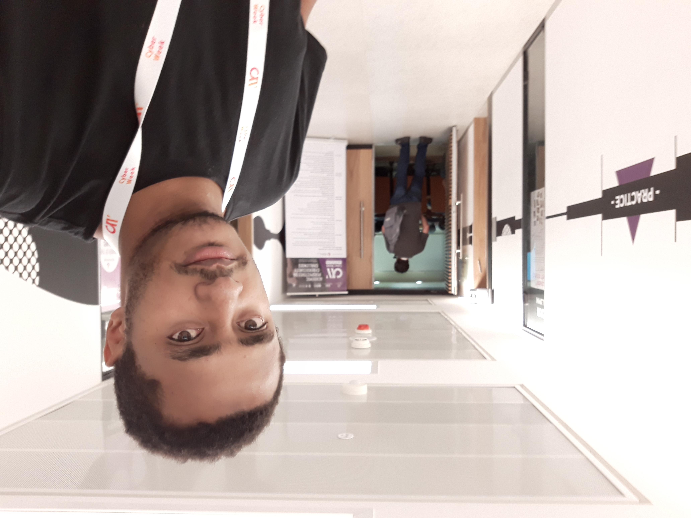

About Me
Hello there, I am from Addis Ababa, Ethiopia.Mathematics
I studied Mathematics as Addis Ababa University(AAU) and its a subject that is dear and close to my heart. It fits in my head. I will always be a mathematician first. I consider myself a lucky mathematician as I get to work on the two most important applications of mathematics in technology: Cryptography and Artificial Intelligence. Most math students, especially in Ethiopia, never get to see its applications. I plan to do something about it, may be put together a workshop, not sure.
CyberSecurity
I took a couple of Cybersecurity training programs in Israel including Cyber Security Analysis, Cryptography, Malware Analysis and Web security. I have also done a lot of projects and participated in conferences. I worked in the cryptology research department of Information Network Security Agency (INSA), the Ethiopian equivalent of NSA.
AI
AI is now what I currently do everyday. I have been assigned to supervise a small team dedicated to applying AI for Cybersecutiy. I started uploading codes and stuff recently on my Github. In general, I am interested in model compression and explainability as they kinda suit my personality. What NLP can do on local languages excites me. And ofcourse, just like ever other AI ethusiast in the world, I am not sure about AGI.
Soft stuff
I did have an interest in perosonal knowledge, the soul and stuff like that. Sometimes, I try to connect them with the AI stuff. Check out my writtings here.
Tiny Leadership
I try to inspire a better mental environment to create frictionless interaction and communication.Future
Chi Na Be Jiorgis